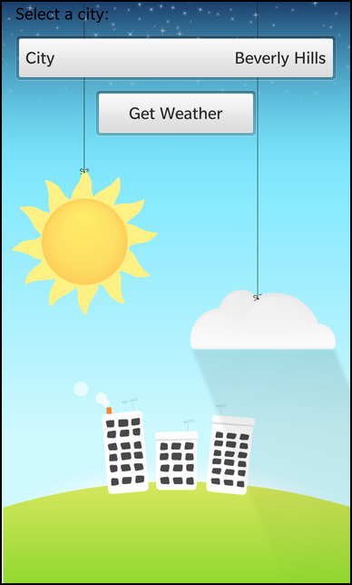
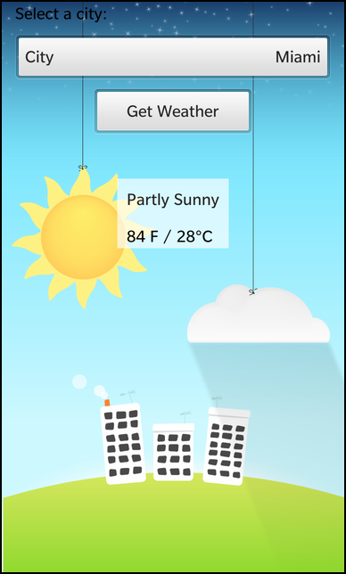

Files:
The SOAP XML example demonstrates how to retrieve weather information from a SOAP-based webservice.
 
In this example we'll learn how to use the QtSoapHttpTransport class for transporting SOAP messages to and from other hosts using the HTTP protocol, and how to parse and extract information from the response message.
The sample application provides an UI where the user can select a city from a dropdown menu, and retrieve/display the weather information for that location using the "Get Weather" button which will send and parse the soap messages from the host.
All the business logic is encapsulated in the C++ class WeatherService which has been exposed to qml as a WeatherService type.
DropDown { id: cityDropDown enabled: !weatherService.active title: qsTr("City") Option { text: qsTr("Beverly Hills") description: qsTr("Beverly Hills, California") value: "90210" selected: true } Option { text: qsTr("Detroit") description: qsTr("Detroit, Michigan") value: "48201" } Option { text: qsTr("Pittsburgh") description: qsTr("City of Pittsburgh (South Side), Pennsylvania") value: "15203" } Option { text: qsTr("Miami") description: qsTr("Miami, Florida") value: "33126" } Option { text: qsTr("Mordor") description: qsTr("One does not simply walk into Mordor") value: "331261" } onSelectedIndexChanged: { weatherService.reset() } }
The DropDown menu where the user can select one of the available citys for which weather data can be retrieved, which is only active as long as the WeatherService is active.
Button { horizontalAlignment: HorizontalAlignment.Center text: qsTr("Get Weather") enabled: !weatherService.active onClicked: { weatherService.requestWeatherInformation(cityDropDown.selectedValue); } }
The 'Get Weather' button will invoke the requestWeatherInformation(zipcode) slot of the WeatherService object when the user clicks it. Like the DropDown, the button will be disabled while the information is retrieved, parsed and displayed.
NetworkActivity { horizontalAlignment: HorizontalAlignment.Center active: weatherService.active } Container { property alias active: activityIndicator.running visible: activityIndicator.running layout : DockLayout {} ActivityIndicator { id : activityIndicator horizontalAlignment : HorizontalAlignment.Center verticalAlignment : VerticalAlignment.Center preferredHeight : 500 preferredWidth : 500 } }
This indicator displays the progress, only active during the process, of sending a soap message, and parsing the reply which deactivates during the display of the message response.
Container { horizontalAlignment: HorizontalAlignment.Center topMargin: 100 topPadding: 20 leftPadding: 20 rightPadding: 20 background: Color.create("#aaffffff") visible: !weatherService.active && weatherService.succeeded Label { text: weatherService.description textStyle { base: SystemDefaults.TextStyles.BodyText textAlign: TextAlign.Center } } Label { topMargin: 30 text: weatherService.temperature textStyle { fontSizeValue: 26 color: Color.Black textAlign: TextAlign.Center } } } Container { horizontalAlignment: HorizontalAlignment.Center topMargin: 100 visible: !weatherService.active && !weatherService.succeeded TextArea { editable: false backgroundVisible: false text: weatherService.error textStyle { base: SystemDefaults.TextStyles.SmallText color: Color.Black textAlign: TextAlign.Center } } } }
The first Container is only visible if the WeatherService is no longer active and has succeeded, allowing the labels to present the temperature information from the soap request. The second Container is active if the WeatherService does not succeed and displays the generated error message. The "visible, text" properties are bound to the WeatherService objects properties, which will be refreshed/updated when those properties change.
attachedObjects: [ WeatherService { id: weatherService } ]
This is the registered qml custom type WeatherService, which the rest of the qml can reference to access its properties, slots or invokable methods.
The WeatherService class encapsulates the mechanism for creating SOAP messages requests to the host, and parsing the reply messages to display the results. It contains a QtSoapHttpTransport member variable which will do the low-level http communication.
WeatherService::WeatherService(QObject* parent) : QObject(parent) , m_succeeded(false) , m_active(false) { bool ok = connect(&m_soap, SIGNAL(responseReady()), SLOT(onServiceResponse())); Q_ASSERT(ok); Q_UNUSED(ok); }
In the constructor the responseReady() signal of the QtSoapHttpTransport against the onServiceResponse() slot of the WeatherService object, so that we can parse the soap response when the host has responded to our request.
void WeatherService::requestWeatherInformation(const QString &zipCode) { if (m_active) return; m_active = true; emit activeChanged(); m_succeeded = false; m_soap.setAction("http://ws.cdyne.com/WeatherWS/GetCityWeatherByZIP"); m_soap.setHost("wsf.cdyne.com"); QtSoapMessage request; request.setMethod(QtSoapQName("GetCityWeatherByZIP", "http://ws.cdyne.com/WeatherWS/")); request.addMethodArgument("ZIP", "http://ws.cdyne.com/WeatherWS/", zipCode); // Submit the method request to the web service. m_soap.submitRequest(request, "/WeatherWS/Weather.asmx"); }
Inside this method a new city request is passed to the addMethodArgument() of the QtSoapMessage with the zip code as parameter that the user selected in the DropDown in the UI.
void WeatherService::onServiceResponse() { // Get the response, check for error. const QtSoapMessage& response = m_soap.getResponse(); if (response.isFault()) { m_error = tr("Query failed: %1").arg(response.faultString().value().toString()); emit statusChanged(); m_active = false; emit activeChanged(); emit complete(); return; } // Extract the return value from this method response, check for // errors. const QtSoapType& responseValue = response.returnValue(); if (!responseValue.isValid()) { m_error = tr("Query failed: invalid return value"); emit statusChanged(); m_active = false; emit activeChanged(); emit complete(); return; } if (QString::compare("true", responseValue["Success"].toString(), Qt::CaseInsensitive) == 0) { m_succeeded = true; m_error.clear(); const int fahrenheit = responseValue["Temperature"].toInt(); const int celsius = (fahrenheit - 32)*(5.0 / 9.0); m_temperature = QString::fromLatin1("%1 F / %2%3C").arg(fahrenheit).arg(celsius).arg(QChar(0x00B0)); m_description = responseValue["Description"].toString(); emit temperatureChanged(); emit descriptionChanged(); } else { m_succeeded = false; m_error = responseValue["ResponseText"].toString(); } emit statusChanged(); m_active = false; emit activeChanged(); emit complete(); }
After the responseReady signal is generated, the onServiceResponse() method is called. This one parses the QtSoapMessage to test it's validity and extract the weather information related to the selected city.